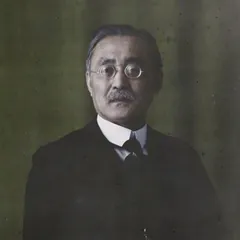

教育者・農政学者。修養と人格、国際人としての生き方を穏やかに説く。
無料で、寺田寅彦の全299作品と、選んだ著者の作品を1つ。質問は5問、使い切ったあとも1日1問（通算30問まで）。
新渡戸稲造に聞かれていること
『自警録』を読みながら、こう聞いたとします。
「自分を励ますにはどうすればいいのですか」
新渡戸稲造の一人称で答えたうえで、根拠として次の箇所を引用します。出どころは引用ごとに示します（その著者の全著作から答えます）。
事に当たって惑うときも苦しむときもちょっと一歩退いて、新渡戸稲造『自警録』
そのときにはこうしようと思ったが、今日その通りできぬはずがない新渡戸稲造『自警録』
もしこれがソクラテス翁さんであったら、この一刹那を如何に処するであろう、と振返って、静に焦立つ精神を鎮めてみる新渡戸稲造『ソクラテス』
引用はサーバで原文と照合し、一致しないものは表示しません。回答の文そのものは AI が著作をもとに再構成したもので、本人の発言ではありません。
- 「人格はどうすれば育つのですか」『人格の養成』
- 「ほんとうの自由とは何ですか」『自由の真髄』
- 「死をどう受けとめればいいのですか」『「死」の問題に対して』
新渡戸稲造の言葉だと言われているもの
収録している新渡戸稲造の全作品を機械で全文検索し、本人の文章に在るか無いかを確かめて答えます。引用はすべて原文からの逐語で、機械で一字一句照合しています。あいだの解説は AI が下書きし、機械で本文と照合したもの（読み合わせは順次行っています）です。新渡戸稲造の言葉ではないので、三人称で書いています。
「太平洋の橋になりたい」は、新渡戸稲造の言葉ですか
短い答え 名著伴読に収録している新渡戸稲造 20 作品（約26万字）の日本語の文章には、「太平洋の橋」という言い回しは見つかりませんでした（「架け橋」「かけ橋」を含めて 0 件）。この言葉は英語で書かれた文章に由来すると言われていて、名著伴読が確かめられる日本語の著作の外にあります。ただし、東と西をどう見ていたかは、『東西相触れて』に本人の言葉で残っています。
『東西相触れて』の書き出しで新渡戸は、東と西を対立するものとして扱う言葉づかいそのものを疑います。東西も左右も、実在の区別ではなく二者の関係を示すだけだ、と。「橋」という比喩は出てきませんが、両岸を最初から一続きのものとして見る目が、ここにあります。
東なくして西はない、西なくして東はない、右があればこそ左があり、左の存在は右を認むるようなもの。新渡戸稲造『東西相触れて』 アプリで読めます
キップリングの有名な一句を引いたうえで、東西を分ける基準そのものが独断的だ、と続けます。「永遠に相逢うことなし」という詩に、新渡戸は正面から反対しています。橋という言葉を使わずに、橋が要ることを言っている箇所です。
東西もまた然り、誰人も知るかのキップリング氏の「東は東、西は西、両者永遠に相逢うことなし」の一句を聞けば、新渡戸稲造『東西相触れて』 アプリで読めます
結びです。西洋の功利的な文化を咀嚼できる東洋人、東洋の奥義を研められる立場、その両方を持つのは日本人ではないか、と締めます。「太平洋の橋」の中身にいちばん近いのはこの一文ですが、主語は自分ではなく日本人全体です。
結局東西の文化を悉く咀嚼し世界的完全なる発達を遂げる者は大和民族ならんか。新渡戸稲造『東西相触れて』 アプリで読めます
読み違えやすいところ 「太平洋の橋になりたい」は新渡戸の言葉として広く知られていますが、収録している日本語の著作には無く、名著伴読は本文にあることしか答えません。また、この文章の結びには、東西の文化を咀嚼できるのは日本民族だ、という一九二八年当時の見方が含まれています。時代の言葉として読んでください。
収録している新渡戸稲造の作品
下の4作品は、はじめの5分ぶんを原文のままこのサイトで読めます。アプリには新渡戸稲造の作品が20本入っています。
- 『「死」の問題に対して』死をどう受けとめるかを考える 2,426字・約5分
- 『自由の真髄』自由とは何かを平明に語る 4,744字・約10分
- 『人格の養成』人格をどう育てるかを説く 5,871字・約12分
- 『自警録』日々の心得を短い章で語る修養書 168,367字・約337分